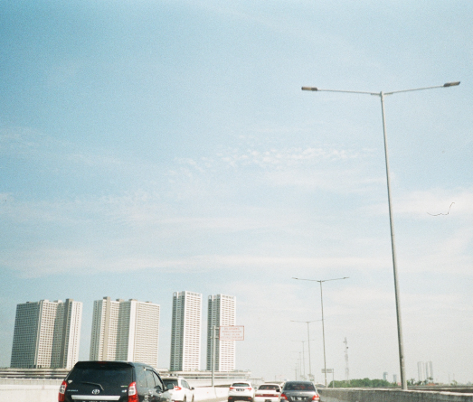
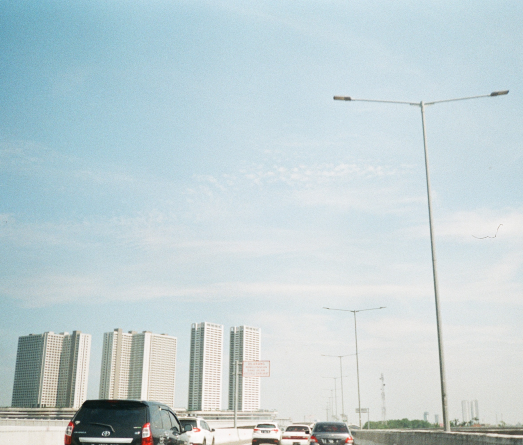

Oh, they say people come, say people go, This particular diamond was extra special And though you might be gone, and the world may not know Still I see you, celestial
 

There was something 'bout you that now I can't remember It's the same damn thing that made my heart surrender And I miss you on a train, I miss you in the morning I never know what to think about -1975

17 and we got a dream to have a family A house and everything in between And then, oh, suddenly we turned twenty Now we got pressure for taking our life more seriously We got our dead-end jobs and got bills to pay Have old friends and know our enemies Now I, I'm thinking back to when I was young Back to the day when I was falling in love -Eastside